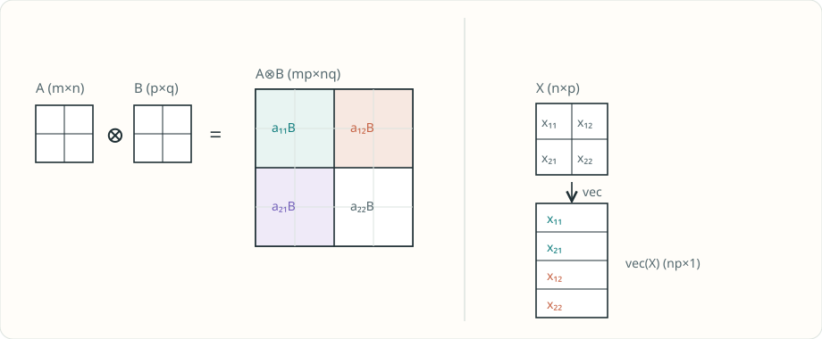

01 / 为什么 AX+XB=C 难解？
给定 A∈R^{m×m}、B∈R^{n×n}、C∈R^{m×n}，求 X∈R^{m×n} 使 AX+XB=C。未知量有 mn 个且相互耦合；朴素地把它当作 mn×mn 的线性系统会把矩阵维度“平方”——两个 1000×1000 的矩阵会生成 10⁶×10⁶ 的系统，远超内存。

A⊗B 的每个块是 a_ij 乘整个 B，维数从 m×n、p×q 变为 mp×nq。右：vec 按列堆叠。可验证观察：vec(X) 的前两个分量来自 X 的第一列，后两个来自第二列。关键工具是 vec 算子与 **vec-trick**：它们把“矩阵未知量”转成“向量未知量”，从而把 AX+XB=C 写成标准形式 M vec(X)=vec(C)。难点随即从“能不能写”变成“能不能高效求”。
vec 按列堆叠；⊗ 为 Kronecker 积；I_k 为 k×k 单位阵。贯穿全文区分“理论可写成线性系统”与“数值上应避免显式构造”。02 / Kronecker 积与混合积性质
设 A∈R^{m×n}、B∈R^{p×q}，A⊗B 是分块矩阵，每个块是 a_ij 乘以整个 B：
维数从 m×n、p×q 跳到 mp×nq。最重要的性质是混合积：只要维数匹配，大矩阵乘法可拆成小矩阵乘法的 Kronecker 积。
其余常用性质：(A⊗B)ᵀ=Aᵀ⊗Bᵀ；可逆时 (A⊗B)⁻¹=A⁻¹⊗B⁻¹；tr(A⊗B)=tr(A)tr(B)；若 A 为 n×n、B 为 p×p，则 det(A⊗B)=(det A)^p(det B)^n；A 的特征值 λ 与 B 的特征值 μ 相乘得到 A⊗B 的特征值 λμ，对应特征向量 x⊗y。
100×100 矩阵的 Kronecker 积是 10000×10000，float64 约 800 MB；1000×1000 则需约 8 TB。因此后续算法一律避免显式构造 A⊗B。03 / vec 算子与 vec-trick
vec 把矩阵按列堆叠成列向量。它与 Kronecker 积结合，给出把矩阵乘积“拉到”线性系统上的恒等式——vec-trick：
推导要点：(AXB) 的第 j 列是 A(Xb_j)，逐列堆叠后 B 的元素经 Kronecker 积分配到位。作为特例，AX=C（A 可逆）等价于
理论上这是标准线性系统，但实践中绝不显式构造 I⊗A——直接对 X 逐列解 AX=C 即可，代价远低。
04 / Sylvester、Lyapunov 与 Bartels–Stewart
对 AX+XB=C 两侧取 vec，用式 19.3（令 B=I 与 A=I 两项）得到
记 M=I_n⊗A+Bᵀ⊗I_m。M 可逆的充要条件是 A 与 −B 无公共特征值，即对所有 i,j 有 λ_i(A)+λ_j(B)≠0；此时 X 唯一。但直接解 M 要处理 mn×mn 的系统，不可行。
Bartels–Stewart 算法绕开显式 Kronecker 积：对 A、B 做 Schur 分解 A=Q_A U Q_Aᵀ、B=Q_B V Q_Bᵀ（U,V 上三角）；令 Y=Q_AᵀXQ_B、D=Q_AᵀCQ_B，方程变为三角系统 UY+YV=D，可逐列回代；最后 X=Q_A Y Q_Bᵀ。总代价 O(m³+n³)，远优于直接法的 O(m³n³)。
Lyapunov 方程是 B=Aᵀ 的特例：
它在稳定性分析中处于核心：对 ẋ=Ax，若存在 X≻0 与 Q≻0 满足此式，则 V(x)=xᵀXx 满足 V̇(x)=−xᵀQx≤0，系统渐近稳定。大规模稀疏情形下应改用 LR-ADI 等迭代法，利用解的低秩结构。
05 / 可复算算例：核对 vec-trick
下面只用 Python 标准库，对固定的小矩阵验证 vec(AXB)=(Bᵀ⊗A)vec(X)。数值只对该算例成立，作用是把符号约定钉死。
def mul(m, n):
p, q, r = len(m), len(n[0]), len(n)
return tuple(tuple(sum(m[i][k]*n[k][j] for k in range(r)) for j in range(q)) for i in range(p))
def tr(m): return tuple(zip(*m))
def vec(m): return tuple(row[c] for c in range(len(m[0])) for row in m) # 按列堆叠
def kron(a, b):
q = len(b[0])
return tuple(tuple(a[i//len(b)][j//q] * b[i % len(b)][j % q]
for j in range(len(a[0])*q)) for i in range(len(a)*len(b)))
A = ((2., 1.), (0., 3.)); B = ((1., 2.), (0., 1.)); X = ((1., 4.), (2., 0.))
lhs = vec(mul(mul(A, X), B))
M = kron(tr(B), A) # Bᵀ ⊗ A
rhs = tuple(sum(M[i][j]*vec(X)[j] for j in range(len(vec(X)))) for i in range(len(M)))
assert lhs == rhs
print("vec(AXB) =", lhs)预期输出：vec(AXB) = (4.0, 6.0, 16.0, 12.0)。核对要点：先算 AXB=[[4,16],[6,12]]，再按列堆叠得 (4,6,16,12)。失败模式： 若改成按行堆叠（row-stacking），结果会变成 (4,16,6,12)，与右端不一致——这正是不同 vec 约定导致公式不同的例子。
该控件给出 A⊗B 的元素数 n⁴ 与 float64 存储量：n=1000 时约 8 TB。它把“别显式构造 Kronecker 积”从口号变成可直接读出的数字。默认状态无需脚本即可理解；键盘方向键可切换。
参考与延伸阅读
- N. J. Higham, Functions of Matrices: Theory and Computation, SIAM, 2008：Sylvester/Lyapunov 方程的数值方法背景
- Bartels & Stewart, Solution of the matrix equation AX+XB=C, SIAM J. Numer. Anal. 9(2), 1972：三角化求解算法（原文）
- Petersen & Pedersen, The Matrix Cookbook：Kronecker 积与 vec 恒等式汇编
- MIT 18.065 Matrix Methods：Kronecker 结构与矩阵方程的应用背景
本页公式给出标准结果及其适用条件；存储量由 8·n⁴ 字节直接计算，未计额外开销。算例用于核对符号约定，不能替代一般证明。